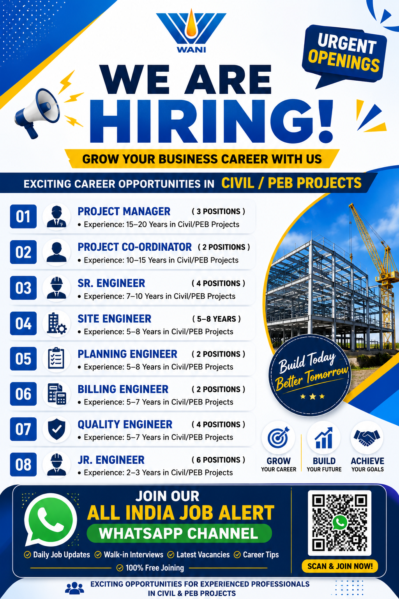

WANI Group has announced urgent openings for experienced professionals in Civil and PEB (Pre-Engineered Building) projects. The recruitment includes multiple positions ranging from Project Manager and Project Coordinator to Senior Engineer, Site Engineer, Planning Engineer, Billing Engineer, Quality Engineer and Junior Engineer.
This recruitment opportunity is suitable for candidates who have relevant experience in Civil construction, PEB projects, site execution, planning, billing, quality control and project coordination. Applicants should carefully check the experience requirement for their preferred position before submitting their resume.
Company: WANI Group
Industry: Civil Construction / PEB Projects
Recruitment: Urgent Hiring
Positions: Project Manager, Project Coordinator, Senior Engineer, Site Engineer, Planning Engineer, Billing Engineer, Quality Engineer and Junior Engineer
Project Experience: Civil / PEB Projects
Application: Email / WhatsApp / Contact
Get the latest construction jobs, engineering vacancies, walk-in interviews and new job updates directly on WhatsApp.
JOIN WHATSAPP CHANNELThe current recruitment drive is focused on professionals who have practical experience in Civil and PEB projects. The vacancies cover different levels of responsibility, allowing experienced professionals to apply according to their previous project exposure and technical background.
Candidates with strong site execution experience can consider the Site Engineer and Senior Engineer positions. Professionals who have handled project coordination and larger teams may be suitable for Project Coordinator or Project Manager opportunities. Planning and billing professionals can consider the Planning Engineer and Billing Engineer positions, while candidates with quality-control experience can apply for the Quality Engineer role.
The Junior Engineer position is intended for candidates with comparatively lower experience. According to the recruitment information, applicants for this position should have approximately 2–3 years of experience in Civil or PEB projects.
The Project Manager position requires approximately 15–20 years of experience in Civil or PEB projects. Candidates applying for this role should have strong project-management experience and the ability to coordinate construction activities, project teams, contractors and other stakeholders.
The Project Coordinator position requires approximately 10–15 years of experience in Civil or PEB projects. The role can involve coordination between project teams, site departments, contractors and management. Candidates should have good communication and project coordination skills.
Senior Engineer vacancies are available for candidates with around 7–10 years of relevant Civil or PEB project experience. Applicants should have practical knowledge of construction-site activities and should be comfortable coordinating with supervisors, engineers and other project teams.
The Site Engineer position is suitable for professionals having approximately 5–8 years of Civil or PEB project experience. Candidates should have practical exposure to site execution, drawings, measurements, supervision and coordination.
Planning Engineer applicants should have approximately 5–8 years of Civil or PEB project experience. Planning professionals may be expected to monitor project progress, prepare schedules, coordinate activities and support project reporting.
Billing Engineer positions are available for professionals with approximately 5–7 years of experience in Civil or PEB projects. Candidates with knowledge of measurements, quantity calculations, billing documentation and project-related commercial work may be suitable for this position.
The Quality Engineer role requires approximately 5–7 years of experience in Civil or PEB projects. Candidates should have knowledge of quality procedures, inspection, documentation and coordination with site execution teams.
The Junior Engineer vacancy is suitable for candidates with around 2–3 years of Civil or PEB project experience. Applicants should have basic technical knowledge and practical exposure to construction-site activities.
Experience requirements vary significantly according to the position. Senior management positions require extensive experience, while the Junior Engineer position requires comparatively less experience. Candidates should apply for the position that best matches their actual experience.
Civil and PEB project experience is specifically mentioned in the recruitment information. Candidates should clearly mention their project type, designation, total experience and responsibilities in their resume.
Candidates with relevant experience in Civil construction and PEB projects can consider applying. The recruitment includes positions for experienced professionals at different levels. Applicants should not apply only based on the job title; they should also compare their actual experience with the requirement mentioned for the position.
Candidates with experience in residential, commercial, industrial or PEB construction projects may find relevant opportunities depending on their previous responsibilities and technical knowledge. A properly prepared resume can help recruiters understand the candidate's experience quickly.
Before applying, candidates should update their resume with their latest designation, total years of experience, previous companies, project names, project locations, educational qualifications and technical responsibilities.
Civil and PEB professionals should clearly mention their experience in site execution, supervision, planning, billing, quality control, project coordination or management. Candidates should avoid providing incorrect experience information and should ensure that all information in the CV is accurate.
Interested and eligible candidates can send their updated resume to the recruitment email address provided below.
Email:
hr@wanigroup.com
WhatsApp:
+91 7776078833 – Send Resume on WhatsApp
Contact:
+91 8530222069 – Click to Call
Official Website:
www.wanigroup.com
Candidates should prepare an updated resume before contacting the recruitment team. The CV should contain the applicant's full name, contact number, email address, educational qualification, total work experience, current designation, previous employment details and relevant Civil or PEB project experience.
When sending the resume through email, applicants should use a clear subject line such as “Application for Project Manager” or “Application for Site Engineer”. This can help the recruitment team identify the position for which the candidate is applying.
Candidates using WhatsApp should send a clear PDF resume and mention the position they are interested in. It is recommended to avoid sending incomplete or unclear documents.
Civil and PEB construction projects provide professionals with experience in structural work, site execution, project coordination, planning, quality control and commercial activities. Depending on the role, professionals may work with engineering teams, contractors, subcontractors and project management teams.
For experienced professionals, opportunities such as Project Manager and Project Coordinator can provide responsibility for managing multiple project activities and teams. Senior Engineers and Site Engineers can gain practical experience in construction execution and technical coordination.
Planning and Billing Engineers can develop expertise in project scheduling, quantity measurement, billing and progress monitoring. Quality Engineers can work on inspection procedures, quality documentation and compliance with project specifications.
This job post has been prepared using the recruitment information provided in the supplied job poster. Candidates should verify the latest vacancy status, employment terms, salary, project location, selection process and other conditions directly with the recruiting organization before accepting any offer.
Never pay money to an unknown person for job registration, selection, interview scheduling or offer letters without proper verification. Be careful of recruitment scams and verify suspicious requests before making any payment.
Join our WhatsApp channel for Civil jobs, construction jobs, engineering vacancies, walk-in interviews and daily job alerts.
👉 JOIN ALL INDIA JOB ALERTThe recruitment includes Project Manager, Project Coordinator, Senior Engineer, Site Engineer, Planning Engineer, Billing Engineer, Quality Engineer and Junior Engineer positions.
The required experience depends on the position and ranges from around 2–3 years for Junior Engineer to approximately 15–20 years for Project Manager.
Yes. The recruitment specifically mentions Civil and PEB project experience for the listed positions.
Candidates can send their resume through email or WhatsApp using the contact details provided in the How to Apply section.
Yes. Job seekers can join the WhatsApp channel to receive recruitment updates and new vacancy notifications.
Stay updated with the latest Civil, Construction, Engineering, Supervisor, Site Engineer and other job opportunities.
FOLLOW WHATSAPP CHANNEL